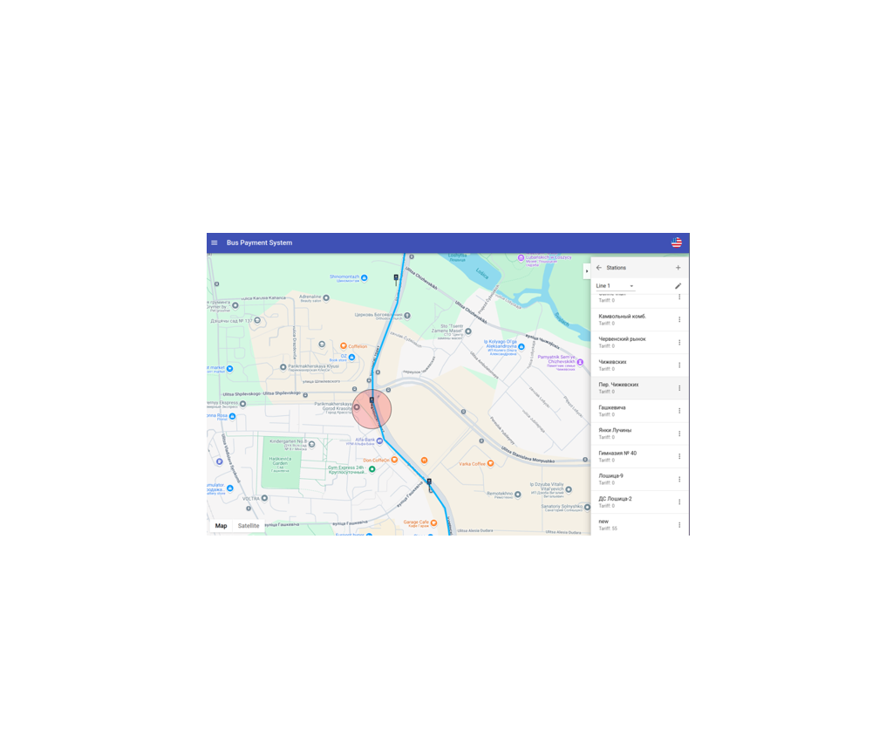

Bus Manager — это интеллектуальная система управления информационным контентом в общественном транспорте, объединяющая медиа-панели, GPS-навигацию и компьютерное зрение для таргетированной рекламы и аналитики пассажиропотока. Высококачественные антивандальные мониторы в салоне автоматически объявляют следующую остановку с синхронизацией аудио и видео, демонстрируют таргетированную рекламу с учетом текущего местоположения через GPS-модуль и поддерживают различные форматы медиафайлов. Встроенные внутренние и внешние камеры с алгоритмами компьютерного зрения точно считают входящих и выходящих пассажиров на каждой остановке, формируя детальную транспортную аналитику для оптимизации маршрутов и оценки размера рекламной аудитории. Облачная админ-панель обеспечивает централизованное управление контентом всего автопарка через веб-интерфейс: администраторы загружают рекламные ролики, назначают маршруты и настраивают расписание показа.
Bus Manager интегрируется с системами диспетчерского управления транспортом для синхронизации расписаний и маршрутной информации, рекламная платформа поддерживает автоматическое размещение объявлений с гибкими планами, учитывающими время показа, популярность маршрута и демографические характеристики аудитории. Аналитические данные предоставляются рекламодателям для оценки эффективности кампаний и ROI. Bus Manager трансформирует общественный транспорт в эффективную рекламную платформу с точной аналитикой пассажиропотока, геолокационным таргетингом и высоким уровнем вовлечения аудитории.
